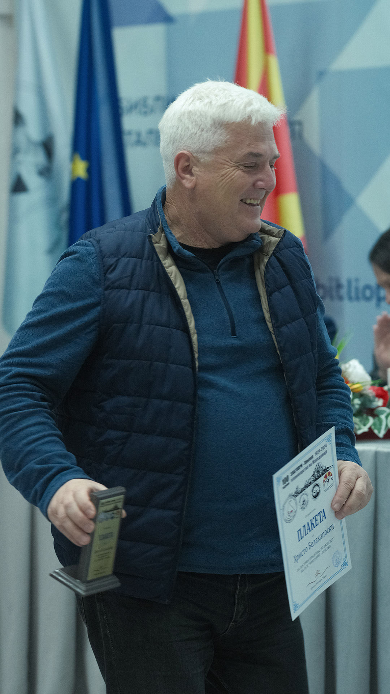

МИСИЈА

MORE THAN
just a sport
СКК Златоврв е клуб кој е целосно посветен на спортското качување. Како што големиот Нејц Заплотник умее да каже,
качувањето не е само спорт, тоа е начин на живот. Така, спортското качување не е само физички предизвик – тоа е и патување
длабоко во себе. Достигнувањето на нови височини на карпите, нас ни помага да достигнеме и нови височини во нашиот личен развој.
Со секој чекор и секоја нова насока, не само што ги тестираме нашите физички способности и граници, туку ја зајакнуваме и нашата
духовна волја. Нашата мисија е негување на тимски дух и индивидуални достигнувања, каде што секој успех, без оглед на големината,
ќе носи чувство на исполнетост и слобода.
ИСТОРИЈА
ESTD
1924
Клубот Златоврв е основан во далечната 1924 година и со тоа запишува историја на најстар планинарски клуб во нашата држава.
Низ годините, Златоврв - Прилеп, кој името го добил по врвот над прилепски Трескавец - Златоврв, бележи големи достигнувања,
први искачувања на врвови и минување значајни трансверзали, како во земјава, така и по светот. Во клубот членуваат истакнати
партизани, а обновата на клубот во поствоениот период ја предводи работничката класа на фабриката 11-ти Октомври.
Тогаш клубот брои околу 200 активни членови. Клубот бил составен од неколку секции кои вклучувале планинарство, спелеологија,
ориентација, алпинизам.. и така клубот функционира се до раните 2000 - години кога настануваат измени во рамки на федерација и
клубот е приморан да основа посебни клубови - ограноци. Така, од еден клуб, се одделуваат пет, посебни клубови, меѓу нив и
нашиот Спортско качувачки клуб Златоврв - Прилеп.

ИНСТРУКТОР

merits
СКК Златоврв го води лиценциран инструктор по спортско качување, проф. Христо Белакапоски.
По професија и занимање е наставник по физичко образование во едно основно училиште во Прилеп. Активен спортист, со љубов и посветеност на планините и спортот.
Во 2024 год. добитник е на плакета за посебни заслуги и значајни достигнувања во спортското качување.

↓
↓